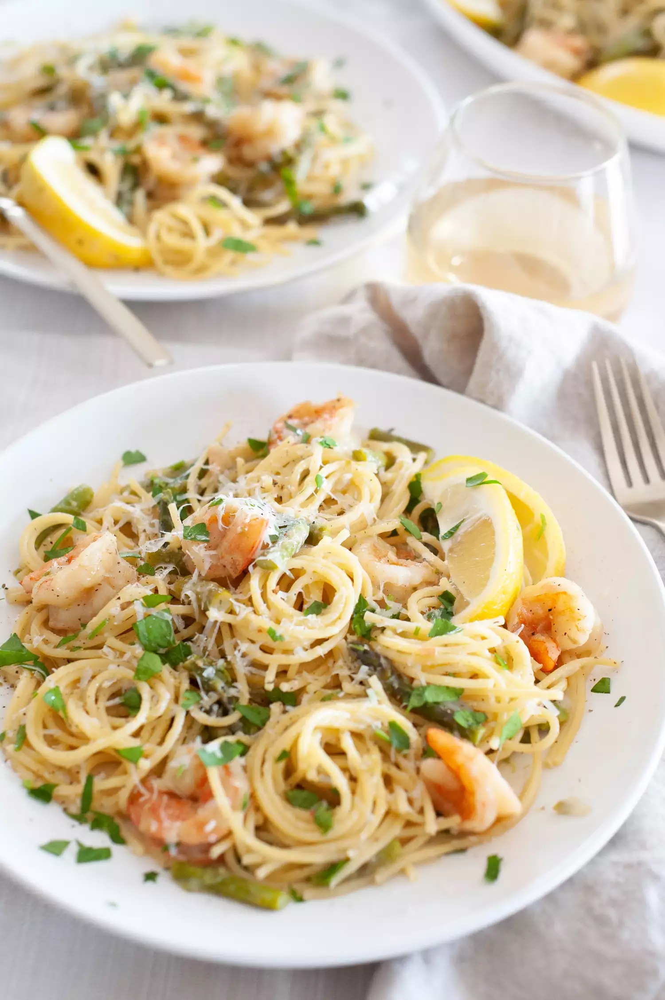

Shrimp Asparagus Pasta

Ingredients
12 ounces spaghetti
3 tablespoons olive oil
1 yellow onion, diced
1 pound medium-large uncooked shrimp (21/25 per pound)
1 bunch medium-sized asparagus, tough ends removed, cut into 1-inch pieces
4 cloves garlic, minced
1/2 teaspoon kosher salt, plus more to taste
1/4 teaspoon freshly ground black pepper, plus more to taste
1/2 cup dry white wine
3 tablespoons unsalted butter, divided
1 lemon, juiced
Wondering how to make this? Here's how.
- Boil water for pasta:
- Fill a large pot with water and salt it generously.
- Set it over high heat and bring to a boil.
- Cook the pasta:
- When the salted water is at a rolling boil, add the pasta.
- Cook the pasta according to the package instructions, until it is just 1 minute shy of al dente, very nearly cooked but slightly too firm in the center, about 10 minutes.
- Drain the pasta in a colander, reserving 1 cup of pasta water to add to the shrimp and asparagus.
- Cook the shrimp and asparagus:
- Finish the dish:
- Add the drained pasta to the pan with 1/2 cup of the reserved pasta water and the remaining 1 tablespoon of butter.
- Cook, stirring occasionally and using tongs to coat the pasta with all of the ingredients in the pan.
- Stir, until the pasta is tender but still firm in the center, 1 to 2 minutes.
- Serve and enjoy!
Back to the Top
Back to Homepage